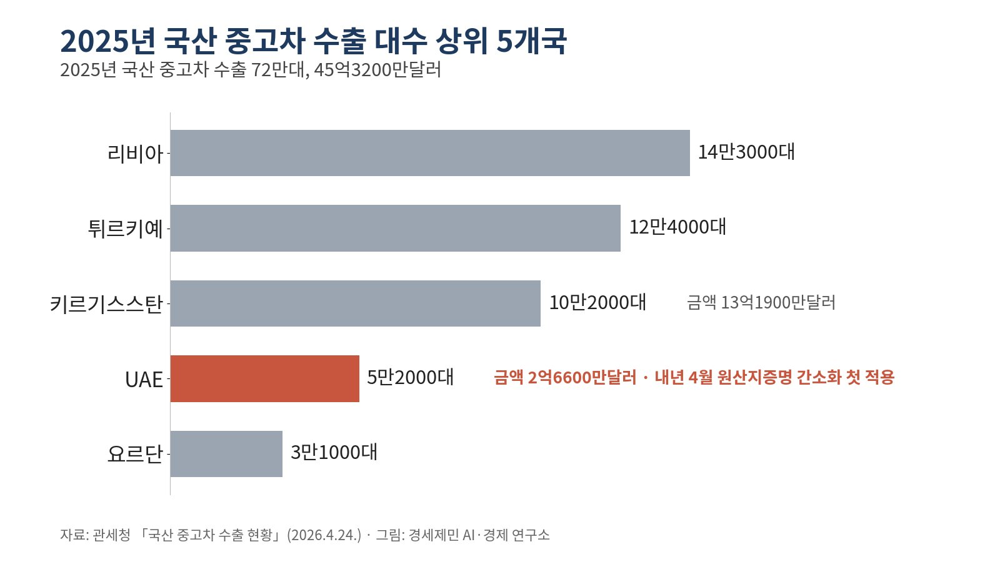
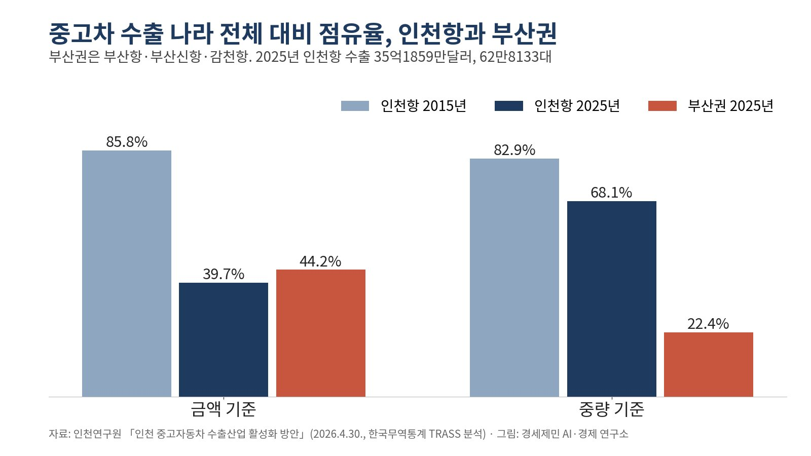

국산 중고차 원산지증명 차대번호로 간소화, 내년 4월 UAE행부터
세관 기관발급 한정, GCC·조지아와도 협의
인천항, 중동행 중고차 수출액 77% 몫
AI경제저널=김갑봉 기자 | 재정경제부와 관세청이 18일 국산 중고자동차 수출 원산지 증명 절차를 차대번호(VIN) 확인으로 간소화한다고 밝혔다. 제조사 원산지 소명자료가 없어도 차대번호로 한국에서 제조·가공한 사실이 확인되면 세관이 원산지증명서를 발급한다. 첫 대상은 아랍에미리트(UAE)로 가는 중고차이고, 2027년 4월 1일 시행한다.
재정경제부는 UAE 관세당국이 10월 14일 한국 정부의 간소화 방안을 전면 수용하기로 합의했다고 밝혔다. 이 합의로 중고차 수출업계가 그동안 실질적으로 쓰지 못한 한-UAE 포괄적경제동반자협정(CEPA) 특혜관세를 쓸 수 있게 된다고 설명했다. 한-UAE CEPA는 5월 1일 발효했다.

1. 제조사 서류 대신 17자리 차대번호
차대번호는 모든 자동차에 붙는 17자리 고유 식별번호다. 제조국과 제조사, 생산연도를 확인할 수 있다.
자동차 원산지는 보통 세번변경기준이나 부가가치기준으로 가린다. 세번변경기준은 수입 재료를 충분히 가공해 완성품 품목번호(HS코드 4단위)가 원재료와 달라지면 원산지로 인정한다. 부가가치기준은 협정 당사국 안에서 만든 부가가치가 일정 비율 이상이어야 원산지로 인정한다. 중고차 수출업체는 신차 제조사가 가진 자재명세서(BOM)와 원가자료를 손에 넣기 힘들어 이 기준을 맞추기 어려웠다.
새 방안은 한국에서 제조·가공한 사실만으로 세번변경기준 원산지를 인정한다. 수리나 부품 교체가 있어도 완성차의 세번변경을 포괄적으로 인정한다. 원산지증명서는 수출업체가 스스로 발급하지 못하고 세관만 발급한다. 재정경제부는 원산지 증명의 공신력을 높이려는 조치라고 밝혔다.
정부는 자동차 원산지에 세번변경기준과 기관증명을 적용하는 걸프협력회의(GCC, 사우디아라비아·쿠웨이트 등)와 조지아와도 간소화 방안을 협의할 계획이다. 산업통상부 자유무역협정(FTA) 누리집은 한-GCC FTA와 한-조지아 CEPA를 발효 전인 「서명/타결」 단계로 분류하고 있다. 진승하 재정경제부 관세정책관은 "향후에도 수출 기업들의 FTA 관세 혜택을 확대하기 위해 노력하겠다"고 말했다.
2. UAE행 국산 중고차 2년 새 3배 이상
관세청 「국산 중고차 수출 현황」을 보면 UAE로 간 국산 중고차는 2023년 1만6000대, 2024년 2만4000대, 2025년 5만2000대다. 2025년은 2023년의 3배 이상이다(연구소 계산).
UAE행 2025년 금액은 2억6600만달러(약 3561억원)다. UAE 몫은 2025년 국산 중고차 수출 72만대의 7.2%, 금액 45억3200만달러(약 6조674억원)의 5.9%다(연구소 계산).
재정경제부는 UAE를 세번변경기준과 기관증명 방식을 적용하는 FTA 체결국 가운데 최대 수출시장으로 꼽았다. 산업통상부는 한-UAE CEPA를 한국이 중동·아랍권 국가와 처음 맺은 무역통상협정으로 소개했다. UAE의 관세철폐율은 품목수 기준 91.2%(최장 10년)이고, 자동차가 관세 철폐 품목에 들었다.
업계는 4월 관세청 현장점검 때 원산지 문제를 꺼냈다. 이종욱 관세청장은 차장이던 4월 24일 인천 연수구의 중고차 수출업체를 찾았다. 현장에서는 중고차가 신차와 달리 원산지 입증 절차가 복잡해 협정 활용이 제한적인 만큼 현실적인 지원이 필요하다는 의견이 나왔다. 중동행 컨테이너 운임이 전쟁 이전보다 3배 이상 올랐다는 의견도 나왔다.
3. 88억7000만달러와 45억3200만달러, 두 집계
산업통상부는 2025년 중고차 수출액을 88억7000만달러(약 11조8752억원)로 집계했다. 2024년보다 75.1% 늘어난 역대 최고치다. 산업통상부는 한국차 이미지 개선과 고환율을 까닭으로 들었다.
관세청 「국산 중고차 수출 현황」의 2025년 금액은 45억3200만달러로 산업통상부 집계의 51% 수준이다(연구소 계산). 2023년에도 산업통상부는 47억5000만달러(약 6조3593억원), 관세청은 21억4700만달러(약 2조8744억원)로 집계해 차이가 났다. 관세청 표는 제목에 「국산」을 달았다.
인천연구원 보고서는 한국무역협회 무역통계(K-stat)에서 HS코드 10단위 「중고차」 품목을 모두 더해 2025년 중고차 수출을 88만3373대, 88억6840만달러(약 11조8730억원)로 집계했다. 금액은 산업통상부 집계와 비슷하고, 대수는 관세청 「국산」 72만대보다 약 16만3000대 많다(연구소 계산).
관세청 집계로 2025년 수출 대수 1위는 리비아(14만3000대)다. 튀르키예(12만4000대), 키르기스스탄(10만2000대), UAE(5만2000대), 요르단(3만1000대)이 뒤를 이었다. 키르기스스탄은 대수 14.2%, 금액 29.1%(13억1900만달러, 약 1조7659억원)를 차지했다. 리비아는 대수 19.9%, 금액 5.0%였다(연구소 계산).
관세청 집계로 올해 1~3월 국산 중고차 수출은 12만대, 7억4700만달러(약 1조원)다. 이 가운데 UAE행은 7000대, 4400만달러(약 589억원)다.
산업통상부는 9월 자동차 수출이 1년 전보다 5.5% 줄어든 까닭으로 중동 전쟁과 주요국 규제 강화에 따른 중고차 수출 감소 등을 들었다. 인천본부세관 집계로 10월 인천 소재 기업의 중고차 수출은 1년 전보다 50.8% 줄었다.
4. 인천항, 중동행 77%·아프리카행 95%
인천연구원은 4월 30일 「인천 중고자동차 수출산업 활성화 방안」(연구책임 강동준 연구위원)을 냈다. 보고서는 한국무역통계(TRASS)로 항만별 수출을 분석했다. 2025년 인천항 중고차 수출은 35억1859만달러(약 4조7107억원), 62만8133대다.
인천항의 나라 전체 대비 금액 점유율은 2015년 85.8%에서 2025년 39.7%로 내렸다. 중량 점유율은 같은 기간 82.9%에서 68.1%로 내렸다. 2025년 부산권(부산항·부산신항·감천항)은 금액 44.2%, 중량 22.4%로 금액에서 인천항을 앞섰다. 보고서는 인천을 저가 대량 수출, 부산을 고가 소량 수출 중심으로 분석했다.

보고서의 지역 분류로 보면 2025년 중동행 수출액의 77.14%, 아프리카행 수출액의 95.48%가 인천항에서 나갔다. 중동행 몫은 2015~2025년 누계 86.52%보다 낮다. 보고서는 중동 시장에서 인천항 점유율이 내려가는 추세라고 적었다.
송도 중고차 수출단지는 5개 단지 47만107㎡에 업체 약 1600곳(2024년 10월 기준)이 모여 있다. 보고서가 188개 업체를 조사해 보니 개인사업체가 63.3%, 임대 사업장이 71.3%였다. 보고서는 이 조사를 인천 소재 업체 중심의 현장 기반 조사라고 밝히면서, 확률표집으로 뽑은 모집단 추정은 아니라고 적었다.
수출 병목은 내륙 물류·보관(47.4%)과 행정·통관(30.3%)에 몰렸다. 업체들이 꼽은 제도 수요는 품질 인증·공공 인증제(38.8%)와 행정 절차 간소화(31.9%)였다. 보고서는 이 산업의 인천 지역 내 직접 환류효과를 연간 2072억~4284억원, 현상유지 기준으로는 약 3166억원으로 추정했다.
5. 보고서의 제안, 세관 단속, 단지 이전 일정
인천연구원 보고서는 일본과 UAE 두바이 사례를 들어 중고차 수출 경쟁력이 물량 처리 능력이 아니라 공신력 있는 품질관리, 신속한 물류, 바이어 신뢰가 결합될 때 강화된다고 분석했다. 보고서는 일본 사례로 검사기관 제빅(JEVIC)을 들어, 검사원이 잰 데이터를 곧바로 중앙 서버로 보내 검사증 위변조 가능성을 막는다고 소개했다.
보고서는 관리 제도 개선, 품질 신뢰 체계, 기반 인프라 조성 3개 정책에 9개 과제를 제안했다. 공신력 성능검사 기능 도입, 수출 중고차 성능 인증·표시제 도입, 원스톱 행정 서비스센터 구축이 과제에 들었다. 보고서 내용은 연구진 견해로 인천시 정책과 다를 수 있다.
세관은 수출 서류를 거짓으로 꾸민 사건도 적발했다. 관세청은 3월 12일 최근 3년간 러시아행 자동차 불법수출 29건, 1796억원어치를 적발했다고 밝혔다. 러시아 주변국을 목적국으로 거짓 신고하거나, 배기량을 낮춰 신고하거나, 내수용 신차를 중고차로 둔갑시킨 수법이었다.
인천본부세관은 8월 31일 2000cc 초과 중고차 1024대(시가 507억원)를 제재 대상국으로 허가 없이 수출한 혐의로 4명을 검찰에 송치했다고 밝혔다. 세관은 화물운송주선업체가 세관 제출용과 실제 운송용 서류를 따로 만들었고, 일당이 수출대금 2796억원을 가상자산으로 받았다고 설명했다.
인천시 민선8기 공약 자료는 남항 일대 39만8155㎡에 「인천항 스마트 오토밸리」를 조성하는 일정을 2023년 상반기 민간사업자 선정, 2025년 상반기 착공, 2026년 하반기 1단계 준공과 송도 수출단지 이전 개시로 적었다.
인천연구원 보고서는 이 사업의 기존 방식이 중단·재검토되면서 업체들이 이전이나 기능 재배치 대안을 확보하지 못했다고 적었다. 인천시는 4월 21일 수출단지를 현장점검하며 인천항만공사 등과 협의체를 운영하고 연구용역을 추진하고 있다고 밝혔다.
재정경제부는 내년 3월 중 「FTA관세법 시행규칙」 개정안을 공포하고, 세관은 4월 1일부터 UAE로 가는 중고차에 원산지증명서를 발급할 계획이다. 관세청은 시행 전까지 중고차 원산지증명서 발급절차를 정비하고 수출업계 설명회를 열 계획이다.
이 기사의 원화는 11월 18일 한국은행 매매기준율(1달러 1338.8원)로 환산했다.
참고문헌
공식 발표자료
- 「국산 중고차 수출 원산지 증명 간소화 추진」(보도자료), 재정경제부·관세청, 2026.11.18., https://www.korea.kr/briefing/pressReleaseView.do?newsId=156789710
- 「관세청, 중고차 수출 '비상'에 긴급 현장점검」(보도자료), 관세청, 2026.4.24., https://www.korea.kr/briefing/pressReleaseView.do?newsId=156757759
- 「2025년 자동차 수출액 720억불로 역대최대」(보도자료), 산업통상부, 2026.1.15., https://www.motir.go.kr/kor/article/ATCL3f49a5a8c/171439/view
- 「2026년 9월 자동차산업 동향」(보도자료), 산업통상부, 2026.10.19., https://www.korea.kr/briefing/pressReleaseView.do?newsId=156785643
- 「2026년 10월 인천지역 수출입 현황」(보도자료), 인천본부세관, 2026.11.16., https://www.customs.go.kr/incheon/na/ntt/selectNttList.do?mi=3646&bbsId=1502
- 「(참고자료) 한-UAE CEPA 조기 발효(5.1일) 및 협력 확대 논의」, 산업통상부, 2026.4.3., https://www.motir.go.kr/kor/article/ATCL3f49a5a8c/171693/view
- 「한-UAE CEPA 개요」(우리나라 FTA 발효·서명/타결 현황), 산업통상부 FTA 누리집, 2026.11.21. 열람, https://fta.motir.go.kr/ftamain/kfta/lov5/ucp/1
- 「한-UAE 포괄적경제동반자협정(CEPA) 설명회 개최」(보도자료), 산업통상부, 2026.4.15., https://www.motir.go.kr/kor/article/ATCL3f49a5a8c/171731/view
- 「관세청, 러시아행 자동차 불법수출 수사 강화한다」(보도자료), 관세청, 2026.3.12., https://www.korea.kr/briefing/pressReleaseView.do?newsId=156748597
- 「인천세관, 가상자산 악용한 507억 원대 중고차 불법 수출 일당 적발」(보도자료), 인천본부세관, 2026.8.31., https://www.customs.go.kr/incheon/na/ntt/selectNttList.do?mi=3646&bbsId=1502
- 「인천시, 중고차 수출단지 현장점검…수출산업 활성화 방안 모색」(보도자료), 인천광역시, 2026.4.21., https://www.incheon.go.kr/IC010205/view?repSeq=DOM_0000000014584049
- 「27-3. 인천항 스마트 오토밸리 조성(송도 중고차 수출단지 이전)」(민선8기 공약 자료), 인천광역시, 작성일 표기 없음, https://www.incheon.go.kr/humanframe/theme/mayor_8/data/elect/27-3.%20%EC%9D%B8%EC%B2%9C%ED%95%AD%20%EC%8A%A4%EB%A7%88%ED%8A%B8%20%EC%98%A4%ED%86%A0%EB%B0%B8%EB%A6%AC%20%EC%A1%B0%EC%84%B1(%EC%86%A1%EB%8F%84%20%EC%A4%91%EA%B3%A0%EC%B0%A8%20%EC%88%98%EC%B6%9C%EB%8B%A8%EC%A7%80%20%EC%9D%B4%EC%A0%84).pdf
- 「주요국 통화의 대원화환율(원/미국달러 매매기준율)」(통계표 731Y001), 한국은행 경제통계시스템, 2026.11.18., https://ecos.bok.or.kr
연구보고서·논문
- 강동준·민규량·윤석진·문재철·이명화, 「인천 중고자동차 수출산업 활성화 방안」(2026 시정기획연구), 인천연구원, 2026.4.30., https://www.ii.re.kr/base/board/read?boardManagementNo=14&boardNo=18948&menuLevel=2&menuNo=76
사진 출처
- [사진1] 연구소 작성 도표. 수치는 관세청 「국산 중고차 수출 현황」(2026.4.24. 보도자료 표)
- [사진2] 연구소 작성 도표. 수치는 인천연구원 「인천 중고자동차 수출산업 활성화 방안」(2026.4.30.) 표 2-14·2-15·3-1
※ 이 기사는 인공지능기자 위민아이(Wemin_AI)와 협력해 작성했습니다.
관련기사
- 누적 수출 9000억 달러 첫 돌파…인천 비중은 5.1%로 낮아져
- [인천해양주권⑮] 인천항 투자 65% 줄 때 부산항은 84% 늘었다
- [인천항 복합물류②] 인천항을 나서는 화물은 모두 트럭에 오른다
- [한중수교 34년③] 상품은 2700억달러인데 서비스는 388억달러뿐이다
저작권자 © AI경제저널 무단전재 및 재배포, AI학습 및 활용 금지